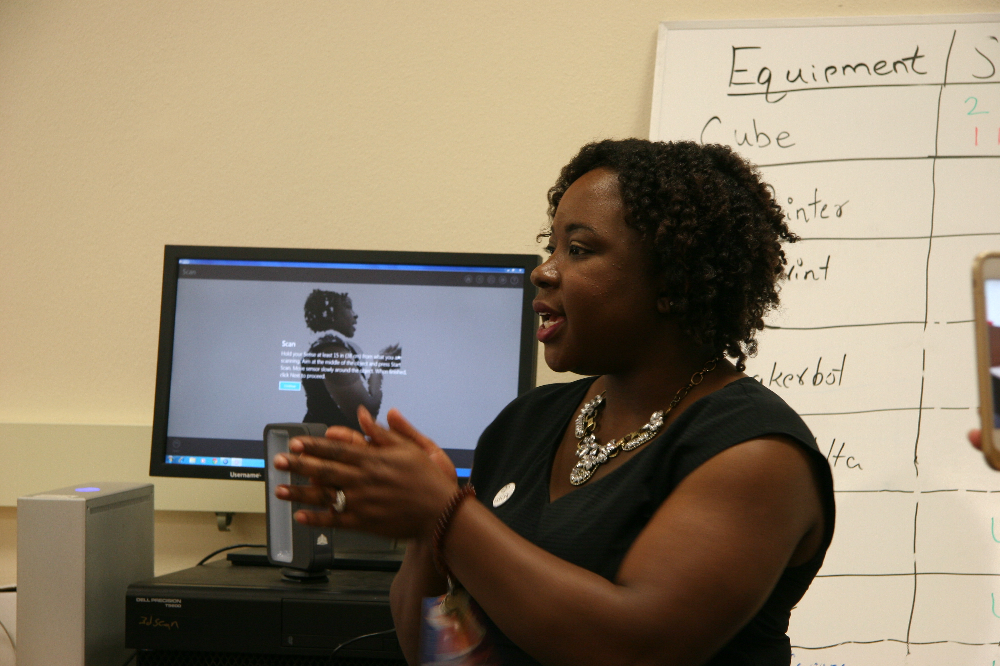
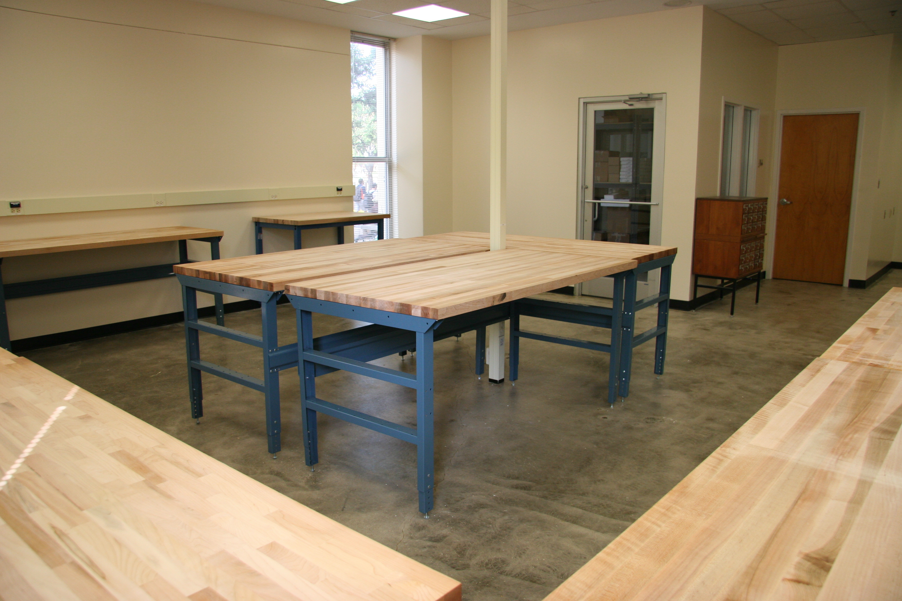
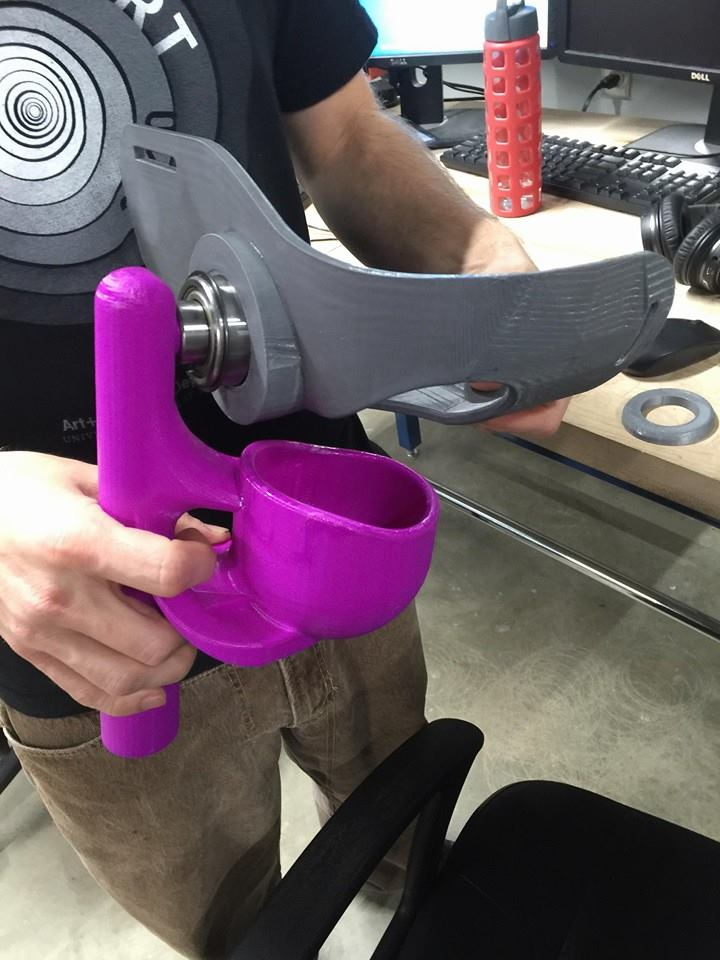
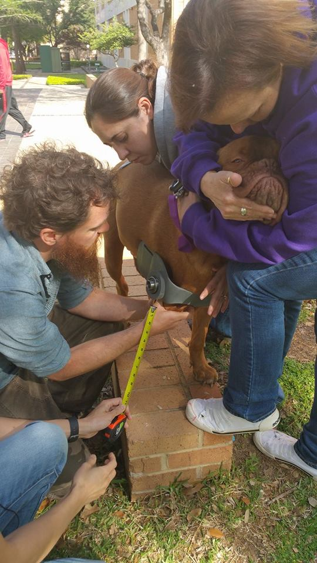
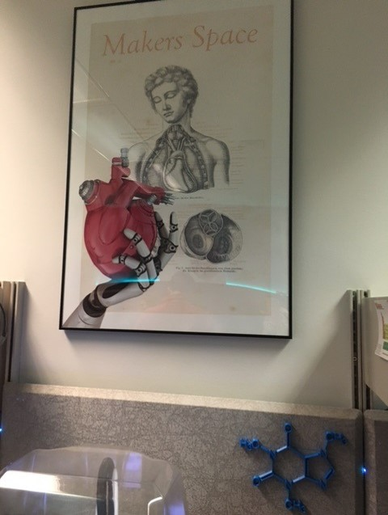

Facilitating Innovation
Mosaic Conference - May 17, 2016
presentation: http://pow123.github.io/makers_mosaic16
Moderator
Susan Fowler @referencegirlPanelists


Introduce Yourself and Your Library
Uni of Texas at Arlington
UTA FabLab

 Prosthetics for kids: NBC DFW Story
Prosthetics for kids: NBC DFW Story
University of Michigan
Taubman Health Sciences Library
Uni of Nebraska Med Center
McGoogan Library of Medicine